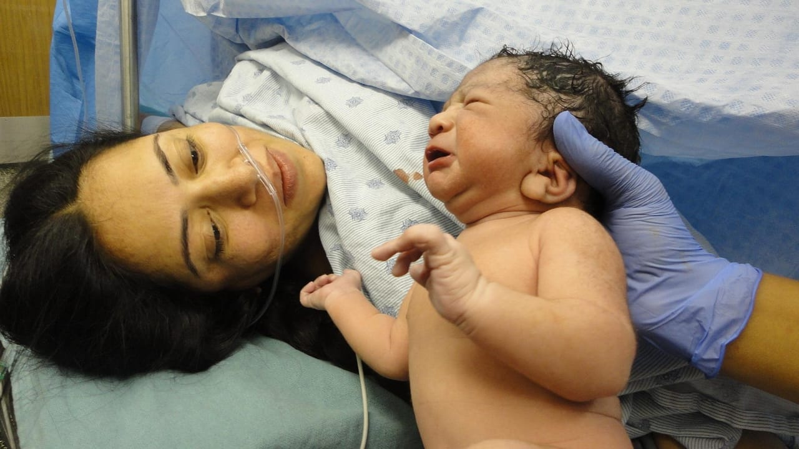

Maternidad Concepción Palacios
Hospital Materno-Infantil tipo IV y centro de referencia nacional. Atención especializada en salud materna, ginecológica y neonatal, respaldada por experiencia asistencial, formación académica y atención integral.
Camas de capacidad arquitectónica
Pacientes atendidas por emergencias
Consultas de primera vez
Nacimientos registrados

Solicita tu cita
Atención personalizada
Agenda al (0212) 462-02-44Sobre la Maternidad
Una institución dedicada a la atención materno-infantil
La Maternidad Concepción Palacios es un Hospital Materno-Infantil tipo IV y centro de referencia nacional para la atención de la salud materna y neonatal. Fundada el 17 de diciembre de 1938, desarrolla actividades asistenciales, docentes y de formación especializada vinculadas con la atención materno-infantil.
La institución cuenta con un edificio principal destinado a servicios de áreas críticas, servicios anexos y hospitalización, además de un segundo edificio donde se desarrollan consultas externas de diferentes especialidades. Su funcionamiento integra el trabajo de equipos asistenciales, administrativos y de apoyo para atender las necesidades de la población.

Atención 24/7
Servicio de emergencias siempre disponible
Departamentos
Conoce las áreas especializadas que conforman nuestra institución
Áreas Asistenciales
Conjunto de servicios y unidades destinados a la atención médica y materno-infantil.

Enfermería
Área fundamental para la atención y cuidado integral de los pacientes.

Emergencia y Medicina Crítica
Áreas orientadas a la atención de situaciones que requieren valoración y manejo especializado.
- Atención 24/7
- Medicina intensiva
- Cuidados críticos
Áreas Administrativas
Áreas encargadas de apoyar la gestión institucional, administrativa y operativa.
- Gestión hospitalaria
- Administración
- Operaciones
Docencia y Formación
Espacio destinado a la formación de profesionales y desarrollo académico en el área materno-infantil.
- Formación profesional
- Residencias médicas
- Educación continua
Servicios
Conoce nuestros servicios especializados en salud materna, ginecológica y neonatal

Atención especializada en salud materno-infantil
La Maternidad Concepción Palacios ofrece atención especializada en salud materna, ginecológica y neonatal, respaldada por experiencia asistencial, formación académica y atención integral para toda la población.
Ver todos los servicios
Neonatología
Cuidado y manejo de recién nacidos
Medicina Materno-Fetal
Seguimiento y manejo materno-fetal
Cirugía
Atención quirúrgica especializada
Consultas Especializadas
Atención en diferentes especialidadesAtención Especializada
Nuestro equipo de profesionales está listo para brindarte la mejor atención
Agenda tu cita médica
Contacta con nosotros para solicitar una cita en cualquiera de nuestros servicios

Emergencia
Atención 24/7
Obstetricia y Alto Riesgo
Atención especializada
Neonatología
Cuidado neonatalGinecología
Salud reproductiva
Medicina Materno-Fetal
Alto riesgo obstétricoCirugía
Procedimientos quirúrgicosAtención médica de excelencia, todos los días
La Maternidad Concepción Palacios combina tecnología avanzada, personal altamente calificado y atención humanizada para ofrecer servicios de salud materno-infantil de la más alta calidad, disponibles las 24 horas del día, los 365 días del año.
Tecnología avanzada
Equipamiento médico de última generación para diagnósticos precisos y tratamientos efectivos.
Disponibilidad 24/7
Servicio de emergencias y atención continua durante todo el día, todos los días del año.
Equipo experto
Profesionales especializados en salud materna, ginecológica y neonatal con amplia experiencia.
¿Necesitas asistencia médica inmediata?
Nuestro equipo de respuesta de emergencia está disponible en todo momento para brindar apoyo médico inmediato cuando más lo necesites.